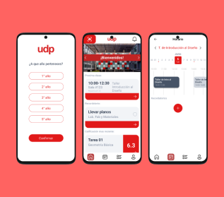
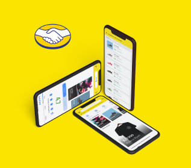
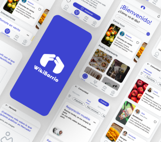

01
Diseño Mobile

Conecta UDP
App para acceso a recursos de la universidad Diego Portales para el
uso de los estudiantes
02
Diseño Mobile

Mercado Libre
App diseñada bajo el concepto de "como sera comprar dentro de 10
años más en Mercado Libre", usando realidad virtual para la prueba
de vestimentas
03
Diseño Mobile

WikiBarrio
App para promocionar la creación de comunidades barriales en
sectores pequeños, donde pueden interactuar entre ellos para
intercambiar productos comestibles, ropa, etc